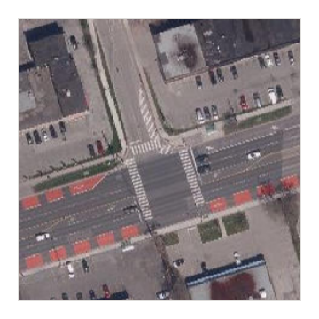

Walk down almost any Toronto street and it becomes clear who it’s built for. Sidewalks are narrow, often cracked or cluttered with utility poles and sandwich boards. Protected bike lanes and dedicated surface transit routes remain limited and disconnected. Meanwhile, multi-lane roads dominate the urban landscape, often surrounded by a sea of parking lots.
What if we asked a simple question: who is all this space really for?
The answer, backed by a close look at the data and geography, reveals deep inequities in how Toronto allocates outdoor space. Whether you walk, bike, take transit or drive, the way public land is distributed has serious implications for how we move, how safe we feel, and who can access opportunities in this city.
This city-wide map shows it clearly: roads and surface parking lots dominate Toronto’s public realm in most neighbourhoods. In total, ___km2 of land in Toronto is dedicated to cars, that's over ___ Trinity Bellwoods Parks.
Mapping distribution of space in the City of Toronto
Space for cars (roads, parking lots)
Space for people (sidewalks, paths, trails, plazas)
Green space (parks, cemeteries, golf courses, school yards, ravines, hydro corridors, etc.) that to varying degrees are accessible to the public.
Data from City of Toronto and OpenStreetMap. Map data are from various collection periods (2019-2025) and may not reflect very recent changes to the built environment (e.g. Portlands redevelopment). Map created using QGIS and Leaflet.
A disconnect between space and travel patterns
The following map shows every transportation segment in Toronto; streets, highways, laneways, sidewalks, paths, trails, and public transit routes.
For each of these segments, we combined data to estimate the total area allocated to the four main modes in which people travel: walking (e.g. sidewalks), bicycling (e.g. bike lanes), public transit (e.g. dedicated transit lanes), and driving (motor vehicle lanes and on-street parking). Here are examples of how this data looks relative to satellite imagery in a couple locations.
Eglinton Ave. East & Beachell St.

Eglinton Ave. East & Beachell St.
Data for . . Dedicated transit. If multiple modes overlap, the area is counted for the dominant mode.
Summing this data across the entire City of Toronto, we find that the vast majority of space on these segments are allocated to motor vehicles, with cycling and dedicated public transit routes only receiving only a small fraction of the space.
Percent of transportation infrastructure in the City of Toronto allocated to each travel mode
Percent of trips by City of Toronto residents taken by travel mode
Percent of local trips by City of Toronto residents taken by travel mode
This imbalance stems from decades of political, planning, and engineering decisions which have prioritized motor vehicles over people.
BEGIN TRANSISSION FROM NEGATIVE TO POSITIVE, PROBLEM TO SOLUTION
Glimpses of a better future
Toronto already has implemented a number of low-cost options for re-designing our streets. These can help re-balance inequalities of space allocated to different travel modes and .... ...
A positive of our findings above is that even though it accounts for a very small minority of space, many residents, for various reasons, opt to walk, cycle, or take transit, indicating that if more space were allocated for these modes, it would not only reduce inequalities, but likely lead to mode shifting as well. REWORD THIS??
Dedicated surface transit lanes
Despite decades car-based planning, there are examples of how Toronto is starting to reallocate space for public transit. For example, in Scarborough, dedicated bus lanes have been added to Eglinton Ave. East, Kingston Rd., and Morningside Ave.
Painted bus lanes on Kingston Road in West Hill, Scarborough, July 10, 2025. Wikimedia Commons.
These bus lanes have been shown to improve travel times and reliability for transit users, while also reducing congestion for all road users. They are a clear example of how reallocating space can benefit everyone, not just those who drive. (ADD SOURCES)
Similarly, the King Street Transit Priority Corridor, in downtown Toronto, a globally recognized success, was fundamentally an exercise in reallocating road space from low-occupancy private vehicles to high-capacity streetcars. By making transit the primary focus, the project moves tens of thousands of people daily more efficiently and reliably than before.
Toronto has approximately 1,300 kilometres of highways, major arterial roads, and minor arterial roads. The vast majority of these roads have TTC surface transit routes and have ample space to add dedicated bus or streetcar lanes to speed up these routes. These roads will not truly be effective "arteries" until they are designed to prioritize people who ride public transit, instead of only motor vehicles.
Extrapolating from City of Toronto reports of recent costs of bus lanes in Scaroborough ($470,000 / km), adding dedicated transit lanes to half of the City's highway and arterial road network would cost approximately $305 Million. This is quite low when comparing to rising costs of larger public transit infrastructure projects across Canada.
For example, the most recent cost estimate for the three-stop Scarborough Subway Extension is $5.5 Billion ($800,000,000 / km). This is not to say that dedicated surface transit lanes are a replacement for higher capacity public transit projects, but rather that they are a cost-effective way to improve transit service quickly as well as provide connections to potentially all neighbourhoods in city.
To be as successful possible, surface transit routes also require implementing measures like transit-priority signals and enforcement against illegal parking in dedicated transit lanes.
Converting unproductive on-street parking to better uses
On-street parking isn't free. Street parking might seem like a minor detail in how we plan urban space, but it plays an outsized role in limiting how streets can be used. In many parts of Toronto, curb lanes are dedicated to vehicle storage parking, despite being some of the most valuable real estate in the city.
In the core, the costs go beyond opportunity. A University of Toronto report found that illegal on-street parking, including in no-parking zones, or double-parking, “reduces lane capacity and disrupts traffic flow, particularly during peak hours.” Their study found that even relatively short parking violations in the Financial District led to measurable increases in congestion and delays for all road users. Moreover, as the Globe and Mail editorial board noted, “road space at the curb is a valuable and limited commodity,” and giving it away cheap reflects “bad economics and bad politics”.
So how can on-street parking be converted to better uses?
A visible example is CaféTO, which has repeatedly demonstrated how curb lanes can be transformed from storage for a single idle vehicle into vibrant patios serving dozens of people, acting as a lifeline for local restaurants and creating new social hubs. The City has also formalized this concept through its Parklet Program, which provides official guidelines for converting individual parking spots into mini public parks, complete with seating and greenery, proving that even small-scale interventions can inject life and community onto a street. Climate resilience is improving by reclaiming pavement; through its Green Infrastructure program, Toronto is now building bioswales in the space once occupied by asphalt curb lanes to absorb stormwater and provide green space to neighbourhoods.
This principle of reallocation has been scaled up with transformative results for transportation. Along major corridors like Bloor Street, University Avenue, Danforth Avenue, and Yonge Street, the installation of protected bike lanes came from directly repurposing space previously dedicated to on-street parking. This represents a clear policy choice: prioritizing the safe movement of thousands of cyclists over the storage of a few dozen cars.
Add 4 photos here of examples of parking into better uses (1 of a nice protected bike lane, 2 cafeTO, 3 seating/plaza, 4 green buffer or parklet)
What about the costs? Funds from strategies like demand-based parking pricing, increased traffic enforcement, and congestion charges could each generate ample revenue to re-design Toronto streets.
Similarly, in our previous work, we estimated the potential income of congestion pricing, based on recent travel survey data that a $9 fee for driving into central Toronto would generate over $2.0 million per day in revenue.
Open streets
What are open streets / pedestrianization of streets - discuss benefits -
Many cities, e.g. Montreal open dozens of streets for months of the year. Toronto only has Market St (summer), Willcocks St (year round), maybe 1 or 2 more???? and occasional weekend festivals.
Add here School of Cities video reel of open street in Calgary design by local school
Residents are supportive of change
Surveys in Toronto have also consistently shown that most residents want more space for walking, bicycling, and public transit.
For example, in Scarborough, a region often labeled as car-dependent, University of Toronto research led by Ignacio Tiznado-Aitken, Assistant Professor in Geography and Planning, asked residents which moded should receive the priority for space and investment. Comparing this to how space is currently allocated in Scarborough highlights a stark disconnect between what people want and what has been built.
Percent of space allocated to each travel mode in Scarborough
Survey of Scarborough residents on which mode should have the "highest priority in terms of space and investment"
The minority opposition to street re-designs and reduction of parking is sometimes framed around concerns of customer access and deliveries. Deliveries can be adjusted to hours mornings or late at night (e.g. mornings or late at night). While the amount of customers arriving by cars is often over-estimated by merchants. In Toronto, after bike lanes were installed along Bloor St. in the Annex and Koreatown, the percent of visitors who arrived by car did not change significantly. In fact, people were spending more.
Political and psychological challenges
So if there is overall support for street re-design projects when they are proposed, and the data of recent projects show little detriment, why are changes limited to a few case studies and sections? Or when changes do happen, why is implementation often riddled with compromises which limit their potential effectiveness?
Cost should not be a barrier, since as we noted, the cost of prioritizing surface public transit, re-allocating on-street parking, and opening streets is relatively quite small – especially when comparing to major infrastructure projects. Moreover, costs could be covered by more intelligent parking pricing and better enforcement.
A major challenge is shifting from the political status quo, which greatly favours those with access to private motor vehicles and maintains infrastructure that privileges their convenience over equity and community benefit.
As John Lorinc writes in Spacing, “Toronto needs to confront the reality that curbside real estate is a limited and highly contested resource. Yet, in many places, we still treat it like an entitlement” (Spacing, 2024). This means space that could otherwise support bike lanes, patios, green buffers, or loading zones is instead handed over, often at low cost, for drivers to leave their cars idle.
Policies that reduce car dominance are often perceived as unreasonable, not because of data or evidence, but because of a widespread assumption that driving must remain the default mode of transport. Recent research has framed this as motonormativity, which refers to the deep cultural bias that treats car use as normal, necessary, and morally neutral, despite having detrimental safety, equity, and environmental impacts. This bias, shaped by decades of media, built infrastructure, and policy leads many people to apply a different standard of judgment to driving than they would to comparable behaviors. For example, research in the UK, found that most people opposed exposing others to secondhand smoke, but many accepted toxic car fumes on crowded streets without question. This double standard makes it politically difficult to reallocate road space toward public transit, cycling, and walking even when such changes would improve public health, safety, and sustainability.
Another possible barrier to change is pluralistic ignorance, a social psychology concept where people individually reject a norm or belief, but incorrectly assume that most others accept it. This can lead to the norm appearing stronger than it actually is. For example, recent research on motonormativity found that many people assumed that other people’s support for non-car transport was lower than their own support. The positive take of this finding combined with surveys of residents, is that support is there, it just needs to be unlocked with increased research, advocacy, and political will.
A fairer future is one we design
Public space belongs to everyone, not just car owners. For too long, Toronto’s streets have served vehicles first. But as we've seen, this is not inevitable. The choice to rebalance our streets is already underway. The successes of CaféTO, the King Street transit corridor, and new protected bike lanes are not isolated experiments; they are a clear verdict. They prove that when we reclaim space from idle cars, we create more room for people, for community, and for a more resilient city.
The path forward is to make this the rule, not the exception. We can achieve this by implementing smart policies and cost-effective re-designs that treat our land as the valuable public asset it is. This means decisively reallocating on-street parking on streets to create permanent space for wider sidewalks, safer bike lanes, and dedicated surface public transit routes. It means intelligently pricing our curb lanes to manage demand and reinvesting that revenue directly into the neighbourhood improvements residents are asking for: better transit, pedestrian, and cycling infrastructure; and vibrant street-scapes and public spaces.
Imagine walking down a curb that is not a lane of cars, but a widened sidewalk filled with planters. Imagine biking on a protected lane unblocked by parked vehicles, or catching a bus that arrives on time because its path is clear. This isn't a distant dream. When we choose to design streets for people, we build a safer, greener, and more equitable Toronto for everyone, starting with the public space that actually serves all its residents.
Data & Methods
Jeff to add detail about the GIS data used for the maps and charts above.